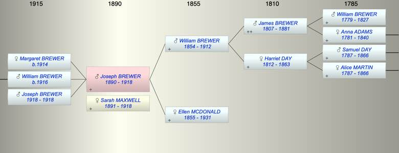

| [Index] |
| Joseph BREWER (1890 - 1918) |
|  |
| b. 05 Aug 1890 at Co Cork, Ireland |
| +. Sarah MAXWELL (1891 - 1918) |
| d. 1918 aged 28 |
| Near Relatives of Joseph BREWER (1890 - 1918) | ||||||
| Relationship | Person | Born | Birth Place | Died | Death Place | Age |
| Grandfather | James BREWER | 1807 | Exminster | 11 Apr 1881 | 4 Victoria Cottages, Parr St Exeter | 74 |
| Grandmother | Harriet DAY | 17 Oct 1812 | Ditcheat, Somerset | 24 Sep 1863 | 50 | |
| Father | William BREWER | 03 Dec 1854 | Alphington | 07 Aug 1912 | 57 | |
| Mother | Ellen MCDONALD | 1855 | County Carlow, Ireland | 1931 | 76 | |
| Self | Joseph BREWER | 05 Aug 1890 | Co Cork, Ireland | 1918 | 28 | |
| Spouse/Partner | Sarah MAXWELL | 1891 | 1918 | 27 | ||
| Daughter | Margaret BREWER | 1914 | ||||
| Son | William BREWER | 1916 | ||||
| Son | Joseph BREWER | 1918 | 1918 | 0 | ||
| Brother | William Edward BREWER | 08 Jan 1880 | Ballincollig (near Cork, Ireland) | 1912 | 32 | |
| Brother | James BREWER | 25 Oct 1881 | Aldershot, England | 21 Jan 1924 | 42 | |
| Brother | Frederick John BREWER | 10 Feb 1887 | Bristol | |||
| Sister | Living or Recently Deceased | |||||
| Granddaughter | Living or Recently Deceased | |||||
| Uncle | Edward BREWER | 03 Feb 1837 | 20 Jun 1868 | Alphington | 31 | |
| Aunt | Rhoda DENNESS | |||||
| Aunt | Ann BREWER | 03 Jan 1839 | Alphington | 25 Nov 1841 | Alphington | 2 |
| Uncle | James BREWER | 23 Oct 1842 | Alphington | 1885 | Alphington | 43 |
| Aunt | Mary J STONE | 1843 | Alphington | 1877 | 34 | |
| Aunt | Maria HUTCHINGS | 1844 | Ippleden | 1909 | Newton Poppleford | 65 |
| Aunt | Amelia BREWER | 27 Oct 1846 | 05 Nov 1871 | 25 | ||
| Uncle | Samuel BREWER | 1848 | Alphington | 1901 | Alphington | 53 |
| Aunt | Elizabeth BROOM | 1848 | Topsham | Y | ||
| Aunt | Charlotte BREWER | 26 Jul 1851 | Alphington | 1940 | Pinhoe | 89 |
| Uncle | Alfred EARL | |||||
| Uncle | Herbert HERBERT | 10 Jan 1847 | 39 Cannon Street, Parish Of St George, Mid | 17 Mar 1906 | 41 Gresham Road, Brixton | 59 |
| Aunt | Jane BREWER | 03 Dec 1854 | Alphington | Y | ||
| Cousin | Amelia Dennis BREWER | 1868 | Diptford | 27 Jan 1921 | 53 | |
| Cousin | Living or Recently Deceased | |||||
| Cousin | Frederick BREWER | 31 Dec 1869 | Alphington | 26 Jun 1870 | Alphington | 0 |
| Cousin | Ernest Samuel BREWER | 03 Oct 1871 | Alphington | 1886 | Exeter | 15 |
| Cousin | Amelia BREWER | 16 Jul 1874 | Alphington | Y | ||
| Cousin | Rosana BREWER | 1877 | Alphington | Y | ||
| Cousin | Florence BREWER | 1882 | ||||
| Cousin | Ellen BREWER | 1884 | Exeter | |||
| Cousin | Albert Edward BREWER | 1887 | 1932 | Exeter | 45 | |
| Cousin | Alfred EARL HERBERT | 1872 | St Pancras | |||
| Cousin | Living or Recently Deceased | |||||
| Cousin | Living or Recently Deceased | |||||
| Cousin | Living or Recently Deceased | |||||
| Cousin | Aubrey Arthur HERBERT | 12 Sep 1886 | Upper Holloway | 1934 | Lambeth | 48 |
| Niece | Living or Recently Deceased | |||||
| Niece | May O'Rouke | 1919 | Dublin | |||
| Niece | Teresa O'Rouke | 1921 | Dublin | |||
| Niece | Living or Recently Deceased | |||||
| Nephew | Living or Recently Deceased | |||||
| Niece | Living or Recently Deceased | |||||
| Niece | Living or Recently Deceased | |||||
| Nephew | Living or Recently Deceased | |||||
| Nephew | James O'Rouke | 1932 | 1932 | 0 | ||
| Niece | Living or Recently Deceased | |||||
| Nephew | Living or Recently Deceased | |||||
| Niece | Living or Recently Deceased | |||||
| Sister in Law | Living or Recently Deceased | |||||
| Brother in Law | Living or Recently Deceased | |||||
| Events in Joseph BREWER (1890 - 1918)'s life | |||||
| Date | Age | Event | Place | Notes | Src |
| 05 Aug 1890 | Joseph BREWER was born | Co Cork, Ireland | |||
| 07 Aug 1912 | 22 | Death of father William BREWER (aged 57) | Note 1 | ||
| 1914 | 24 | Birth of daughter Margaret BREWER | |||
| 1916 | 26 | Birth of son William BREWER | |||
| 1918 | 28 | Birth of son Joseph BREWER | |||
| 1918 | 28 | Joseph BREWER died | Note 2 | ||
| 1918 | 28 | Death of son Joseph BREWER | |||
| 1918 | 28 | Death of wife Sarah MAXWELL (aged 27) | |||
| Personal Notes: |
|
ex his father's army records and 1901 and 1911 census.
Liam Brewer writes "Grandfather Joseph married Sarah Maxwell and they had three children - Margaret (1914) William - my father (1916) and Joseph (1918). Sadly Joseph, Sarah and the baby Joseph died within weeks of each other in 1918. They died from the 'Black' flu which swept through Europe that year. Joseph was just 27 and Sarah 26. My father and his sister Margaret were raised by their maternal grandparents - the Maxwells. |
| Created on a Mac™ using iFamily for Mac™ on 15 Sep 2023 |